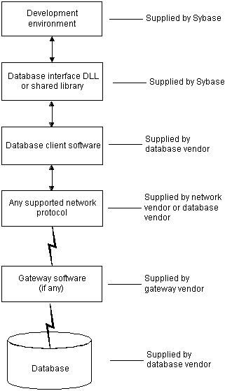

For diagrams showing the specific components of your connection, see "Basic software components" in the section in this chapter for your native database interface.
Using a native database interface
You perform several basic steps to use a native database interface to access a database.
About preparing to use the database
The first step in connecting to a database through a native database interface is to prepare to use the database. Preparing the database ensures that you will be able to access and use your data in PowerBuilder.
You must prepare the database outside PowerBuilder before you start the product, then define the database interface and connect to it. The requirements differ for each database—but in general, preparing a database involves four basic steps.
 To prepare to use your database with PowerBuilder:
To prepare to use your database with PowerBuilder:
Make sure the required database server software is properly installed and configured at your site.
If network software is required, make sure it is properly installed and configured at your site and on the client computer so that you can connect to the database server.
Make sure the required database client software is properly installed and configured on the client computer. (Typically, the client computer is the one running PowerBuilder.)
You must obtain the client software from your database vendor and make sure that the version you install supports all of the following:
- The operating system running on the client computer
- The version of the database that you want to access
- The version of PowerBuilder that you are running
Verify that you can connect to the server and database you want to access outside PowerBuilder.
For specific instructions to use with your database, see "Preparing to use the database" in the section in this chapter for your native database interface.
About installing native database interfaces
After you prepare to use the database, you must install the native database interface that accesses the database. See the instructions for each interface for more information.
About defining native database interfaces
Once you are ready to access the database, you start PowerBuilder and define the database interface. To define a database interface, you must create a database profile by completing the Database Profile Setup dialog box for that interface.
For general instructions, see "About creating database profiles". For instructions about defining database interface parameters unique to a particular database, see "Preparing to use the database" in the section in this chapter for your database interface.